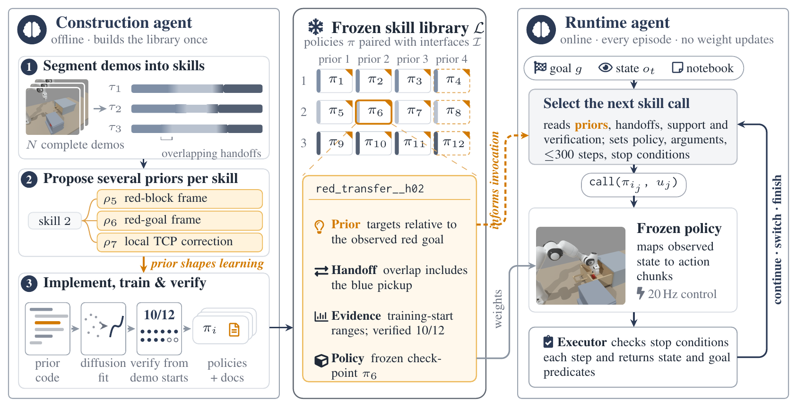

Abstract.
Robots that learn from a few demonstrations often require two forms of generalization. Compositional generalization recombines skills to solve new tasks, and skill generalization lets the learned policy behind each skill work in new situations. The two depend on each other, yet information is lost between composition and the skills it calls. Where a skill works is determined by the structure its policy is trained with, while composition sees the skill only through a separate description, such as a name, an instruction, or a symbolic operator, that omits this structure. Our key idea is to use each policy's structural prior as part of the interface between composition and the skill. A structural prior states what a behavior depends on, for example that a grasp depends only on the gripper's pose relative to the object. Built into training, it shapes where the policy generalizes; stated in language, it tells composition where the policy applies. We instantiate this idea in Agent Priors-guided Policy Learning (APPL). A construction agent segments complete demonstrations into reusable skills, proposes several structural priors for each skill, and trains and verifies one policy per prior. A runtime agent then selects among these prior-specific policies and composes them toward new task goals using their interfaces. Across MetaWorld and long-horizon ManiSkill tasks, APPL improves out-of-distribution skill generalization and enables previously unseen skill compositions; ablating the interface information substantially reduces performance. These results support the use of training-time structural assumptions as a bridge between skill learning and skill composition.
What is a prior?
What a skill depends on, built into how it learns.
How it works.

Long-horizon rollouts.
Twelve demonstrations per task. Objects shifted beyond them. Logged episodes, replayed exactly.
- Reference frame and gripper frame
- Δ gripper moves, drawn ×12
- Object path first, then gripper
- Frame change: scene dims, axes span the view
The interface: each policy's prior, as the agent reads it
1Open drawer
- Prior
- Gripper targets in world coordinates; a phase head separates approach, pull and release.
- Use when
- Drawer at its calibrated place; the entry stage is uncertain.
2Red block to pad
- Prior
- Gripper position as an offset from the red goal pad.
- Use when
- Red block grasped; the pad may have moved.
- Prior
- Anchor switches with the phase: world, red block, pad, gripper, blue block.
- Use when
- The phase is clear; red, the pad or blue may have moved.
3Blue block into drawer
- Prior
- Progress along the straight line from the blue block to its slot, plus a small offset.
- Use when
- Drawer open; the blue block may have moved.
- Prior
- Gripper position as an offset from the blue slot inside the drawer.
- Use when
- Blue block carried; alignment with the drawer slot is the risk.
The interface: each policy's prior, as the agent reads it
1Red block to buffer
- Prior
- Offsets from the gripper pose at each chunk start; a phase head separates grasp, carry and release.
- Use when
- The arm starts away from home, or mid-skill.
2Blue block to goal
- Prior
- Small moves from the gripper's current pose.
- Use when
- Early or late handoff; small gripper offset.
3Red block to goal
- Prior
- Small moves from the gripper's current pose.
- Use when
- Handoff from blue placement; small tracking offset.
- Prior
- Anchor by phase: the blue block, then the red block, then the red pad.
- Use when
- Blue is placed; the red block may have moved.
The interface: each policy's prior, as the agent reads it
1Open drawer
- Prior
- Small moves from the gripper's current pose.
- Use when
- Partial progress or a small arm offset.
2Retrieve from tunnel
- Prior
- Small moves from the gripper's current pose.
- Use when
- Block still in the tunnel; the arm starts off-nominal.
3Place in drawer
- Prior
- Gripper pose in the drawer's placement frame, tracked live.
- Use when
- Drawer open; the placement goal may have moved.
4Close drawer
- Prior
- Small moves from the gripper's current pose.
- Use when
- Release height or closing progress varies.
The interface: each policy's prior, as the agent reads it
1Open lid
- Prior
- Gripper targets in the lid's hinge frame; open and close as a learned mode.
- Use when
- The lid box may have moved or rotated.
2Pick up peg
- Prior
- World coordinates with phase cues from the lid, the peg height and the fingers.
- Use when
- Default; unclear whether the lid is released or the peg grasped.
3Reorient peg
- Prior
- Gripper pose in the held peg's frame.
- Use when
- Peg held rigidly; peg and gripper moved together.
- Prior
- Gripper pose in the hole frame.
- Use when
- The fixture moved; the peg is held.
- Prior
- The peg's pose in the hole frame first, then the gripper through the grasp.
- Use when
- The hole moved or the grasp offset changed.
4Insert peg
- Prior
- The peg's pose in the hole frame first, then the gripper through the grasp.
- Use when
- Peg retained; the hole or the grasp offset changed.
The interface: each policy's prior, as the agent reads it
1Grasp and lift
- Prior
- Gripper position from the cup, then from the bowl, blended as it lifts.
- Use when
- The cup may have moved.
2Pour into bowl
- Prior
- The cup's pose in the bowl frame first, then the gripper; particles as an unordered set.
- Use when
- Cup held rigidly; the bowl may have moved.
3Return cup
- Prior
- Gripper pose in the return-pad frame.
- Use when
- Cup held upright; the pad may have moved.
The interface: each policy's prior, as the agent reads it
1Open drawer
- Prior
- Gripper targets in world coordinates; a phase head separates approach, pull and release.
- Use when
- Drawer at its calibrated place; the entry stage is uncertain.
2Grasp blue
- Prior
- Anchor switches with the phase: world, red block, pad, gripper, blue block.
- Use when
- The phase is clear; red, the pad or blue may have moved.
3Blue into drawer
- Prior
- Gripper position as an offset from the blue slot inside the drawer.
- Use when
- Blue block carried; alignment with the drawer slot is the risk.
4Reopen drawer
- Prior
- Gripper targets in the drawer's own frame, sliding with the drawer.
- Use when
- The drawer is displaced or already partly open.
- Prior
- Gripper targets in world coordinates; a phase head separates approach, pull and release.
- Use when
- Drawer at its calibrated place; the entry stage is uncertain.
Results.
Exp. 1: agent-designed priors for skill generalization
Six MetaWorld tasks, success (%) with N demonstrations.
| Method | N = 2 | N = 5 | N = 10 | N = 20 | Mean | ||||
|---|---|---|---|---|---|---|---|---|---|
| IID | OOD | IID | OOD | IID | OOD | IID | OOD | OOD | |
| Diffusion Policy (B0) | 73.33 | 28.96 | 82.50 | 37.29 | 97.50 | 38.54 | 100.00 | 46.67 | 37.86 |
| Relational prior (B1) | 85.83 | 37.92 | 93.33 | 42.71 | 100.00 | 52.29 | 100.00 | 56.25 | 47.29 |
| APPL, first proposal (q1) | 84.17 | 56.04 | 95.83 | 63.54 | 100.00 | 73.33 | 100.00 | 78.75 | 67.92 |
| APPL, best of three (q3) | 90.83 | 80.00 | 100.00 | 81.46 | 100.00 | 90.42 | 100.00 | 88.96 | 85.21 |
| APPL (q4) | 96.67 | 89.58 | 100.00 | 93.54 | 100.00 | 93.33 | 100.00 | 93.13 | 92.40 |
Exp. 2: long-horizon composition
Five ManiSkill tasks. M: shifted objects · T: task-level variants · Comp.: new compositions.
| Method | Drawer | Buffer | Retrieve | Peg | Pour | Total (%) | Comp. | ||||||
|---|---|---|---|---|---|---|---|---|---|---|---|---|---|
| M | T | M | T | M | T | M | T | M | T | M | T | ||
| DP | 0/8 | – | 0/8 | – | 1/8 | – | 3/8 | – | 0/8 | – | 10.0 | – | – |
| SinglePrior | 1/8 | – | 0/8 | – | 2/8 | – | 1/8 | – | 0/8 | – | 10.0 | – | – |
| Agent+VLA | 1/8 | 8/8 | 1/8 | 4/8 | 5/8 | 8/8 | 5/8 | 4/8 | 1/8 | 4/8 | 32.5 | 70.0 | 6/16 |
| APPL w/o interface information | 0/8 | 4/8 | 4/8 | 5/8 | 2/8 | 6/8 | 0/8 | 7/8 | 2/8 | 4/8 | 20.0 | 65.0 | 2/16 |
| APPL w/o prior information | 4/8 | 7/8 | 0/8 | 4/8 | 4/8 | 6/8 | 3/8 | 6/8 | 7/8 | 6/8 | 45.0 | 72.5 | 3/16 |
| APPL w/o HL agent | 0/8 | 4/8 | 2/8 | 4/8 | 0/8 | 4/8 | 3/8 | 4/8 | 4/8 | 5/8 | 22.5 | 52.5 | 1/16 |
| APPL w/o verification | 2/8 | 5/8 | 3/8 | 6/8 | 2/8 | 5/8 | 8/8 | 6/8 | 6/8 | 5/8 | 52.5 | 67.5 | 7/16 |
| APPL | 3/8 | 7/8 | 2/8 | 8/8 | 7/8 | 8/8 | 1/8 | 7/8 | 7/8 | 7/8 | 50.0 | 92.5 | 8/16 |
Selection needs the interface
Same library, interface hidden: 50.0 → 20.0% · 92.5 → 65.0% · 8/16 → 2/16.
Priors enable new handoffs
The return policy's prior ignores particles, so the agent used it to return a full cup.
BibTeX
@article{jiang2026appl,
title = {Agent Priors-guided Policy Learning},
author = {Jiang, Puming and Hu, Tianrun and Du, Haozhe and Li, Yibo and
Xue, Zhiwei and Li, Xinhu and Soh, Harold},
journal = {arXiv preprint arXiv:2609.35690},
year = {2026}
}